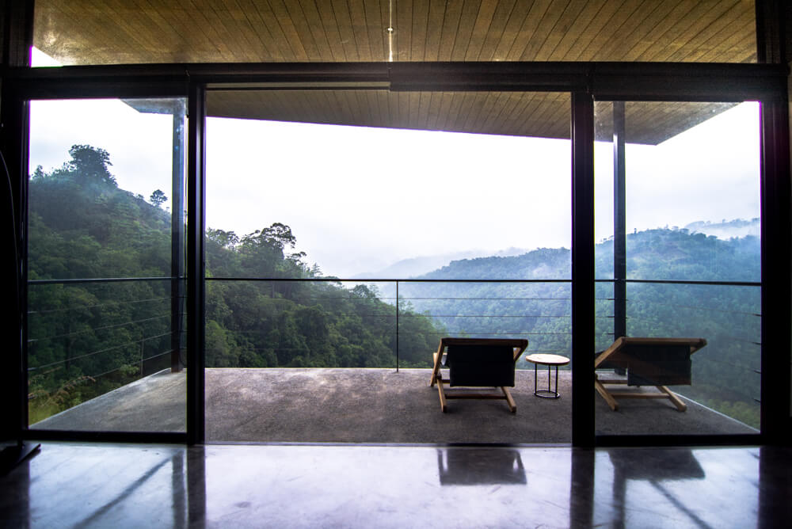
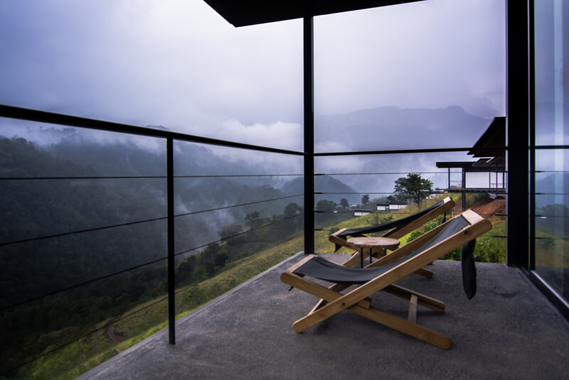
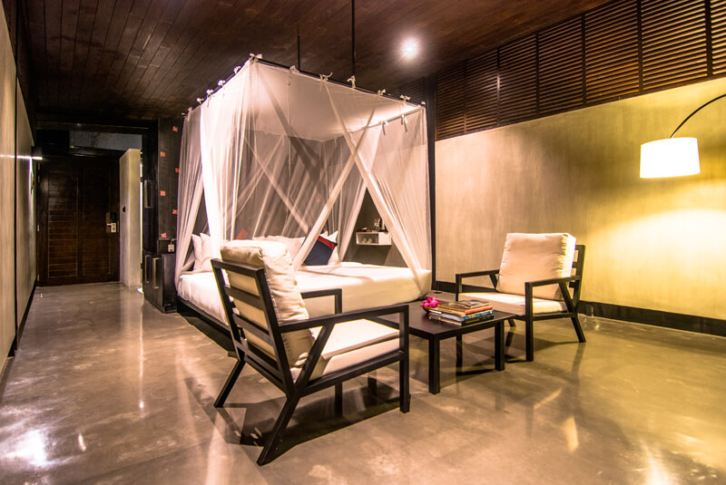

Rooms & Lifestyle
We chose to design our contemporary dwellings based on the concept of the ‘ambalama’, which is the Sri Lankan word meaning ‘place of rest.’ Historically, pilgrims and traders moved around this sun-kissed island on foot. Simple shelters called ambalama came into being, offering these travellers somewhere safe to rest up for the next leg of a long journey. This human need to rest has not changed; today’s travellers too are in need of a place to rest up, along the journey of life. Stylish and utterly comfortable, our interiors too are deliberately minimal. As in ancient Buddhist meditation caves in the mountains surrounding Santani, this lack of distraction allows you to focus your mind solely on slowing it down. To further support your efforts to ‘reset,’ our rooms do not have televisions. While digital detox is a key component of the Santani experience, we do offer in-room WiFi on demand.
| room | benifits | rating |
|---|---|---|
| Mountain View Chalets  | By blurring the distinction between inside and out, these private retreats invite you to rest, relax or meditate while inhaling the pure fresh air and taking in the pristine, truly inspiring scenery around you. We have 16 Mountain View Chalets that overlook the surrounding mountain range. | 100% |
| Balcony | Sixteen stand-alone, single-bedrooms each extending to a balcony and approximately 500 square feet. These can accommodate two people only. Each stylish, elevated room faces into the surrounding jungle valley and the stunning mountains beyond. | 100% |
| chairs | Each room features up-cycled rubber wood lounge chairs, recycled teakwood safari chairs on the balcony, extra large pillows, 100% cotton, high thread count sheets, coffee and tea making facilities, personal safe and two closets. | 100% |
| Children | One of the two chalets are specifically designed for Children between 12 – 15 with no balconies and other safety specifications | 100% |
| The details may change upon the package. |